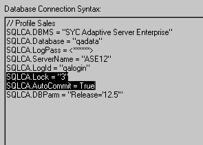

The way you set connection-related database preferences in PowerBuilder varies, as summarized in the following table (AutoCommit and Lock are the only database preferences that you can set in a PowerBuilder application script).
The following sections give the steps for setting database preferences in the development environment and (for AutoCommit and Lock) in a PowerBuilder application script.
For information about using a specific database preference, see its description in the online Help.
There are two ways to set database preferences in the PowerBuilder development environment on all supported development platforms, depending on the preference you want to set:
The AutoCommit and Lock (Isolation Level) preferences are properties of the default Transaction object, SQLCA. For AutoCommit and Lock to take effect in the PowerBuilder development environment, you must specify them before you connect to a database. Changes to these preferences after the connection occurs have no effect on the current connection.
To set AutoCommit and Lock before PowerBuilder connects to your database, you specify their values in the Database Profile Setup dialog box for your connection.
 To set AutoCommit and Lock (Isolation Level) in
a database profile:
To set AutoCommit and Lock (Isolation Level) in
a database profile:
Display the Database Profiles dialog box.
Click the plus sign (+) to the left of the interface you are using
or
Double-click the interface name.
The list expands to display the database profiles defined for your interface.
Select the name of the profile you want and click Edit.
The Database Profile Setup dialog box for the selected profile displays.
On the Connection tab page, supply values for one or both of the following:
For example, in addition to values for basic connection parameters (Server, Login ID, Password, and Database), the Connection tab page for the following Sybase Adaptive Server Enterprise profile named Sales shows nondefault settings for Isolation Level and AutoCommit Mode.
(Optional) In PowerBuilder, click the Preview tab if you want to see the PowerScript connection syntax generated for Lock and AutoCommit.
PowerBuilder generates correct PowerScript connection syntax for each option you set in the Database Profile Setup dialog box. You can copy this syntax directly into a PowerBuilder application script.
For instructions, see "Copying DBParm syntax from the Preview tab".
Click OK to close the Database Profile Setup dialog box.
PowerBuilder saves your settings in the database profile entry in the registry.
To set the following connection-related database preferences, complete the Database Preferences property sheet in the PowerBuilder Database painter:
 Other database preferences The Database Preferences property sheet also lets you set
other database preferences that affect the behavior of the Database
painter itself. For information about the other preferences you
can set in the Database Preferences property sheet, see the User's
Guide
.
Other database preferences The Database Preferences property sheet also lets you set
other database preferences that affect the behavior of the Database
painter itself. For information about the other preferences you
can set in the Database Preferences property sheet, see the User's
Guide
.
 To set connection-related preferences in the Database
Preferences property sheet:
To set connection-related preferences in the Database
Preferences property sheet:
Open the Database painter.
Select Design>Options from the menu bar.
The Database Preferences dialog box displays. If necessary, click the General tab to display the General property page.
Specify values for one or more of the connection-related database preferences in the following table.
| Preference | Description | For details, see |
|---|---|---|
| Shared Database Profiles | Specifies the pathname of the file containing the database profiles you want to share. You can type the pathname or click Browse to display it. | "Sharing database profiles" |
| Connect to Default Profile | Controls whether the Database painter establishes a connection to a database using a default profile when the painter is invoked. If not selected, the Database painter opens without establishing a connection to a database. | Connect to Default Profile in online Help |
| Read Only | Specifies whether PowerBuilder should update
the extended attribute system tables and any other tables in your
database. Select or clear the Read Only check box as follows:
|
Read Only in the online Help |
| Keep Connection Open | When you connect to a database in PowerBuilder without
using a database profile, specifies when PowerBuilder closes the connection.
Select or clear the Keep Connection Open check box as follows:
|
Keep Connection Open in the online Help |
| Use Extended Attributes | Specifies whether PowerBuilder should create
and use the extended attribute system tables. Select or clear the Use
Extended Attributes check box as follows:
|
Use Extended Attributes in the online Help |
| Columns in Table Display | Specify the number of table columns to be displayed when InfoMaker displays a table graphically. The default is eight. |
PowerBuilder saves your preference settings in the database section of PB.INI.
If you are developing a PowerBuilder application that connects to a database, you must specify the required connection parameters in the appropriate script as properties of the default Transaction object (SQLCA) or a Transaction object that you create. For example, you might specify connection parameters in the script that opens the application.
AutoCommit and Lock are properties of SQLCA. As such, they are the only database preferences you can set in a PowerBuilder script. You can do this by:
For more about using Transaction objects to communicate with a database in a PowerBuilder application, see Application Techniques .
The easiest way to specify AutoCommit and Lock in a PowerBuilder application script is to copy the PowerScript syntax from the Preview tab in the Database Profile Setup dialog box into your script, modifying the default Transaction object name (SQLCA) if necessary.
As you complete the Database Profile Setup dialog box in the development environment, PowerBuilder generates the correct connection syntax on the Preview tab for each selected option. Therefore, copying the syntax directly from the Preview tab ensures that you use the correct PowerScript syntax in your script.
 To copy AutoCommit and Lock syntax from the Preview
tab into your script:
To copy AutoCommit and Lock syntax from the Preview
tab into your script:
On the Connection tab in the Database Profile Setup dialog box for your connection, supply values for AutoCommit and Lock (Isolation Level) as required.
For instructions, see "Setting AutoCommit and Lock in the database profile".
For example, in addition to values for basic connection parameters (Server, Login ID, Password, and Database), the Connection tab for the following Adaptive Server profile named Sales shows nondefault settings for Isolation Level and AutoCommit Mode.
For information about the DBParm parameters for your interface and the values to supply, click Help.
Click Apply to save your changes to the current tab without closing the Database Profile Setup dialog box.
Click the Preview tab.
The correct PowerScript syntax for each selected option displays in the Database Connection Syntax box. For example:

Select one or more lines of text in the Database Connection Syntax box and click Copy.
PowerBuilder copies the selected text to the clipboard.
Click OK to close the Database Profile Setup dialog box.
Paste the selected text from the Preview tab into your script, modifying the default Transaction object name (SQLCA) if necessary.
Another way to specify the AutoCommit and Lock properties in a script is by coding PowerScript to assign values to the AutoCommit and Lock properties of the Transaction object. PowerBuilder uses a special nongraphic object called a Transaction object to communicate with the database. The default Transaction object is named SQLCA, which stands for SQL Communications Area.
SQLCA has 15 properties, 10 of which are used to connect to your database. Two of the connection properties are AutoCommit and Lock, which you can set as described in the following procedure.
 To set the AutoCommit and Lock properties in a PowerBuilder script:
To set the AutoCommit and Lock properties in a PowerBuilder script:
Open the application script in which you want to set connection properties.
For instructions, see the User's Guide .
Use the following PowerScript syntax to set the AutoCommit and Lock properties. (This syntax assumes you are using the default Transaction object SQLCA, but you can also define your own Transaction object.)
SQLCA.AutoCommit = value
SQLCA.Lock = "value"
For example, the following statements in a PowerBuilder script use the default Transaction object SQLCA to connect to a Sybase Adaptive Server Enterprise database named Test. SQLCA.AutoCommit is set to True and SQLCA.Lock is set to isolation level 3 (Serializable transactions).
SQLCA.DBMS = "SYC"
SQLCA.Database = "Test"
SQLCA.LogID = "Frans"
SQLCA.LogPass = "xxyyzz"
SQLCA.ServerName = "HOST1"
SQLCA.AutoCommit = True
SQLCA.Lock = "3"
For more information, see AutoCommit or Lock in the online Help.
Compile the script to save your changes.
For instructions, see the User's Guide .
As an alternative to setting the AutoCommit and Lock properties in a PowerBuilder application script, you can use the PowerScript ProfileString function to read the AutoCommit and Lock values from a specified section of an external text file, such as an application-specific initialization file.
 To read AutoCommit and Lock values from an external
text file:
To read AutoCommit and Lock values from an external
text file:
Open the application script in which you want to set connection properties.
For instructions, see the User's Guide .
Use the following PowerScript syntax to specify the ProfileString function with the SQLCA.Lock property:
SQLCA.Lock = ProfileString ( file, section, key, default )
The AutoCommit property is a boolean, so you need to convert the string returned by ProfileString to a boolean. For example, the following statements in a PowerBuilder script read the AutoCommit and Lock values from the [Database] section of the APP.INI file:
string ls_string
ls_string=Upper(ProfileString("APP.INI","Database",
"Autocommit",""))
if ls_string = "TRUE" then
SQLCA.Autocommit = TRUE
else
SQLCA.Autocommit = FALSE
end if
SQLCA.Lock=ProfileString("APP.INI","Database",
"Lock","")
Compile the script to save your changes.
If the AutoCommit and Lock values are stored in an application settings key in the registry, use the RegistryGet function to obtain them. For example:
string ls_string
RegistryGet("HKEY_CURRENT_USER\Software\MyCo\MyApp", &
"Autocommit", RegString!, ls_string)
if Upper(ls_string) = "TRUE" then
SQLCA.Autocommit = TRUE
else
SQLCA.Autocommit = FALSE
end if
RegistryGet("HKEY_CURRENT_USER\Software\MyCo\MyApp", &
"Lock", RegString!, ls_string)